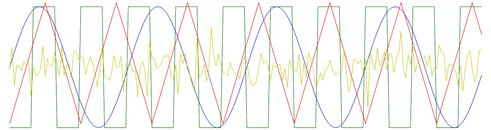

|
libtsd
0.1
Librairie C++ pour le traitement du signal
|
|
libtsd
0.1
Librairie C++ pour le traitement du signal
|

Sont regroupées ici quelques fonction pour générer des signaux (signaux périodiques, aléatoires, ou intervalles).
Fonctions | |
| static auto | tsd::linspace (float a, float b, int n) |
| Intervalle de points équidistants. Plus de détails... | |
| static auto | tsd::logspace (float a, float b, int n) |
| Entre \(10^a\) et \(10^b\). Plus de détails... | |
| static ArrayXi | tsd::intervalle_entier (int a, int b) |
| Intervalle entier. Plus de détails... | |
| static ArrayXf | tsd::intervalle_temporel (unsigned int n, float fe) |
| Intervalle temporel, en fonction de la fréquence d'échantillonnage. Plus de détails... | |
| ArrayXf | tsd::randn (int n) |
| Loi normale (vecteur colonne). Plus de détails... | |
| ArrayXf | tsd::randu (int n) |
| Loi uniforme (vecteur colonne). Plus de détails... | |
| ArrayXb | tsd::randb (int n) |
| Loi aléatoire binaire. Plus de détails... | |
| ArrayXi | tsd::randi (int M, int n) |
| Loi aléatoire catégorielle. Plus de détails... | |
| ArrayXcf | tsd::sigexp (float f, int n) |
| Calcul efficace d'une exponentielle complexe. Plus de détails... | |
| ArrayXf | tsd::sigsin (float f, int n) |
| Calcul efficace d'une sinusoide. Plus de détails... | |
| ArrayXf | tsd::sigcos (float f, int n) |
| Calcul efficace d'un cosinus. Plus de détails... | |
| ArrayXf | tsd::sigtri (int p, int n) |
| Signal triangulaire (périodique) Plus de détails... | |
| ArrayXf | tsd::sigcar (int p, int n) |
| Signal carré (périodique) Plus de détails... | |
| ArrayXf | tsd::sigimp (int n, int p=0) |
| Impulsion discrète. Plus de détails... | |
| ArrayXf | tsd::sigscie (int p, int n) |
| Signal en dent de scie. Plus de détails... | |
| ArrayXf | tsd::siggsin (float f, int n, float a=10) |
| Sinusoïde modulée par une Gaussienne. Plus de détails... | |
| ArrayXf | tsd::siggauss (int n, float a=10) |
| Impulsion filtrée par une Gaussienne. Plus de détails... | |
| ArrayXf | tsd::sigchirp (float f0, float f1, int n) |
| Chirp linéaire. Plus de détails... | |
| ArrayXf | tsd::sigchirp2 (float f0, float f1, int n) |
| Chirp quadratique. Plus de détails... | |
| sptr< Source< cfloat, OHConfig > > | tsd::source_ohc (float freq) |
| Génération d'un signal exponentiel via un oscillateur harmonique. Plus de détails... | |
| sptr< Source< float, OHConfig > > | tsd::source_ohr (float freq) |
| Génération d'un signal sinusoïdal via un oscillateur harmonique. Plus de détails... | |